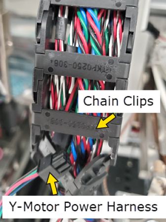
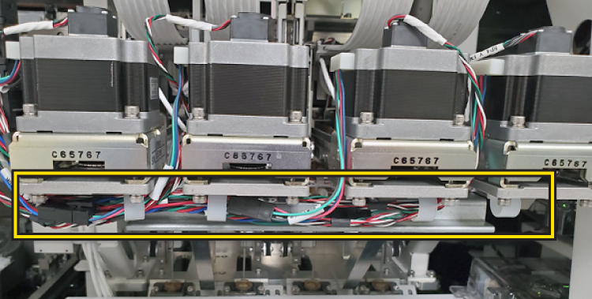
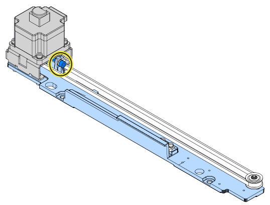
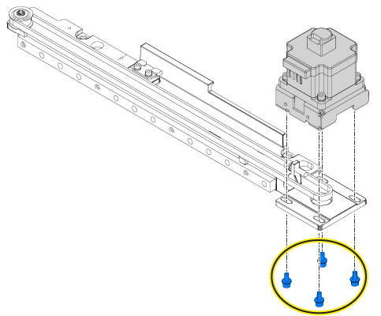
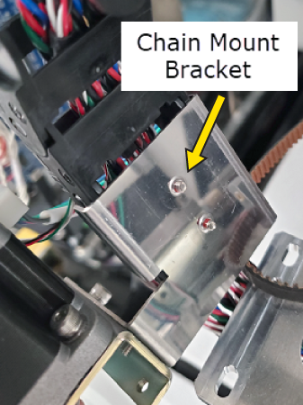
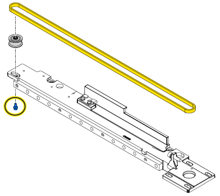

This topic includes information about how to replace the Y-axis pulley for the reagent pipettor.
Safety Reminder
Servicing the DxI 9000 instrument involves potential risks for pinch and puncture, electrical shock, and exposure to hazardous materials. You must mitigate these risks by taking appropriate countermeasures. See
Safety for more information.
Note: The Y-axis pulley is located inside the rear of the instrument. It is easier to access the pulley from the rear.
Gently pull the reagent pipettor assembly to the front of the instrument.
Disconnect the power harness and encoder from the Y-axis motor.
Note: The motor power harness cable for Reagent Pipettor 1 is routed inside the wire harness guide chain, which is mounted onto the left side of the gantry. Locate the cable connector and disconnect a chain clip to access the cable.

The motor power harness cables for the other reagent pipettors are routed through plastic clamps or wire holders attached to the bottom of the motors.

Use a 4mm hex driver to loosen the Y-axis tensioner screw to free the tension from the belt.
Note: Do not remove the screw.

Use a 3mm hex driver to remove the four bottom motor bracket screws.
Note: Do not drop the screws into the reagent storage compartment.

Lift the motor with bracket and remove the belt from the motor pulley.
Remove the motor and bracket from the Y-axis base frame.
Note: The Reagent Pipettor 1 motor with bracket is mounted to the wire guide chain. Be careful not to bend the chain bracket or damage the chain and wires.

Remove the belt from the Y-axis pulley.
Use a 2mm hex driver to remove the Y-axis pulley.
Note: Do not drop the screw into the reagent carriage.
Figure 256:

Install the new pulley and tighten the screw.
install the belt onto the Y-axis pulley.
Install the belt to the motor pulley.
Position the motor with bracket onto the Y-axis base frame.
Secure the bracket using the four bottom screws, but do not fully tighten them.
Connect the motor power harness cable and the encoder connector.
Note: The motor power harness cable for Reagent Pipettor 1 must be routed inside the wire harness guide chain, which is mounted onto the left side of the gantry. You must route the motor power harness cables for the other reagent pipettors through plastic clamps or wire holders attached to the bottom of the motors.
Reconnect the cable. For Reagent Pipettor 1, reclip the chain.
Insert the belt into the belt clip. Be sure the belt grooves are aligned to the pulleys.
Rotate the belt to verify the belt is aligned and straight.
Tighten the tension screw.
Tighten the four bottom screws on the motor bracket.